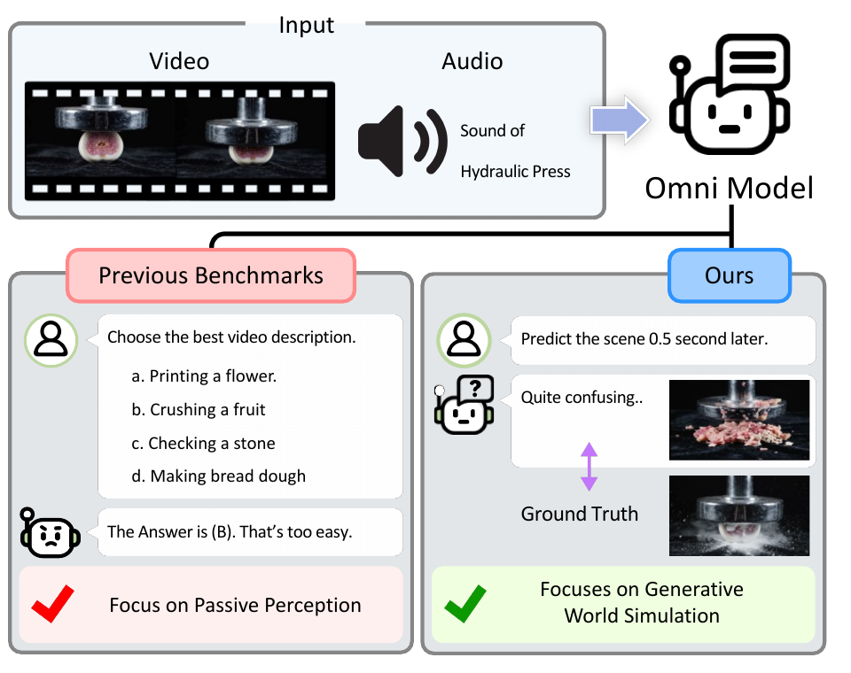

Omni-modal evaluation at NAVER Cloud
Evaluating models, checking evaluation consistency, and developing benchmarks, with supporting contributions to OmniEvaluator’s text evaluation.
AI Resident, Foundation Research team at NAVER Cloud, working on omni-modal foundation models (WBL project). The team’s research spans evaluation, audio, and vision tokenization.
My work focused on language-model evaluation and benchmark development, including evaluation consistency checks and selected framework implementations.
OmniNSP: anticipating the next scene
Describing an observed scene does not establish that a model can anticipate its continuation. OmniNSP asks whether audiovisual context supports a coherent near-future prediction—and whether that prediction survives translation into generated images and speech.

Benchmark design
The benchmark contains 300 human-verified examples across physical, logical, and social dynamics. Automated discovery proposes candidate clips; human review verifies temporal boundaries and context–target alignment. Captions and transcripts are reviewed alongside the media. The aim is a carefully grounded diagnostic set, rather than exhaustive coverage of world modeling.
This text-mediated protocol makes failures between stages visible. Evaluation separates causal plausibility, visual continuity and alignment, and speech diagnostics. Speech measures concern script preservation, naturalness, and speaker similarity; they are not a substitute for evaluating future-state reasoning.
What the analyses show
- Prediction is not realization. Plausible textual forecasts can lose scene consistency during generation. Reusing a shared frozen image generator substantially narrows cross-model consistency gaps, showing that model-specific synthesis stacks account for much of the original visual difference.
- Audio can supply predictive information. Input-modality ablations find complementary benefits beyond vision, particularly for logical transitions and contexts with informative speech.
- Speaker identity and naturalness can conflict. In the evaluated voice-cloning settings, stronger identity preservation can also retain background noise and reduce speech naturalness.
The results motivate evaluating both a forecast and its multimodal realization. This is a near-future diagnostic, not evidence of general world-model competence; the speech-centered synthesis setup also does not test arbitrary environmental sound generation.
OmniEvaluator: comparable, reproducible evaluation
OmniEvaluator is a collaborative framework connecting existing inference backends and evaluation libraries across text, image, video, and audio. A common intermediate schema links data iteration, inference, postprocessing, and metric computation, avoiding separate integrations for every engine–framework pair.
Run artifacts retain prompt templates, generation settings, model and benchmark revisions, intermediate outputs, and scores. The paper also describes shared inference servers and a lightweight answer verifier, examining how prompt conventions and scoring implementations affect comparability.
My work focused on LLM-based verification and evaluation.